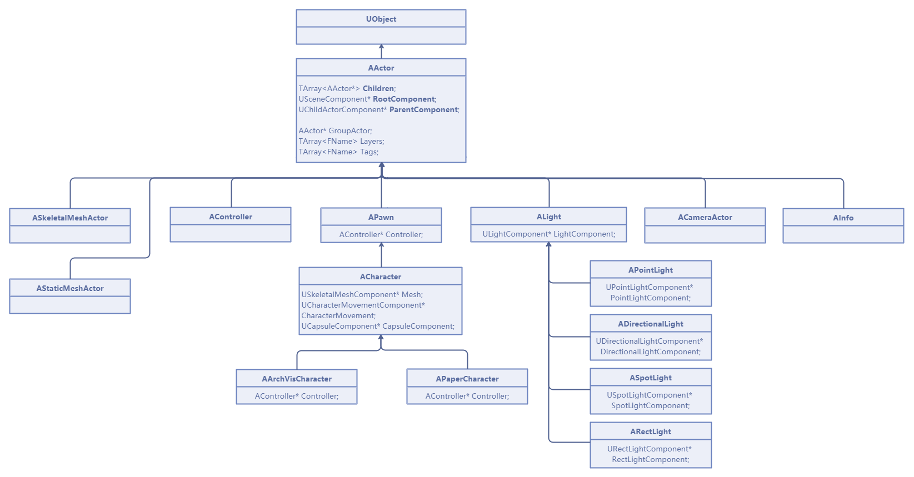
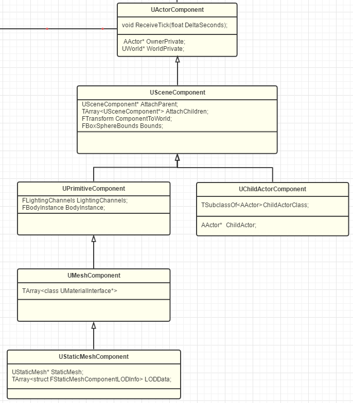
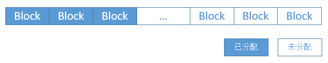
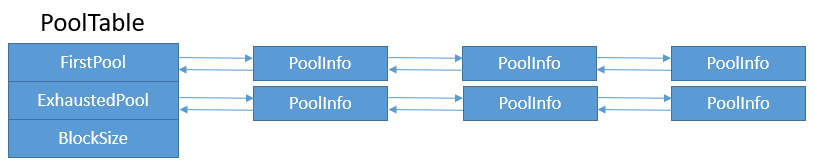
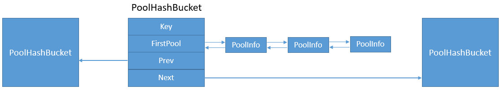
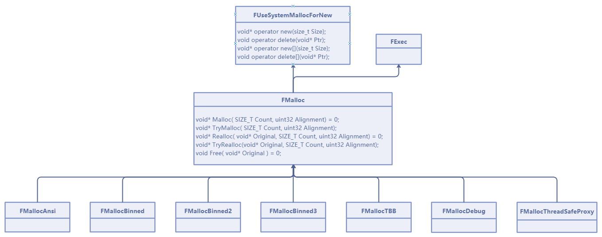
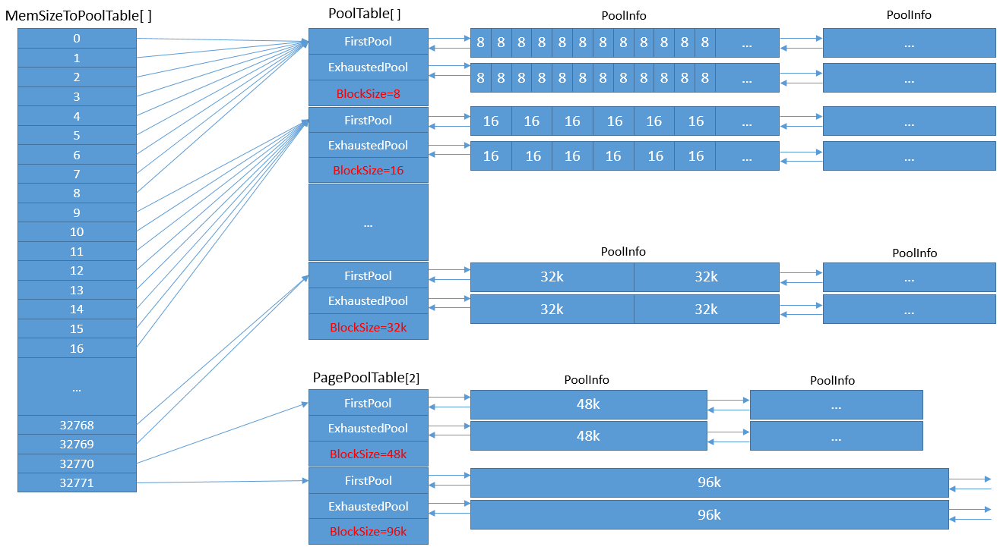
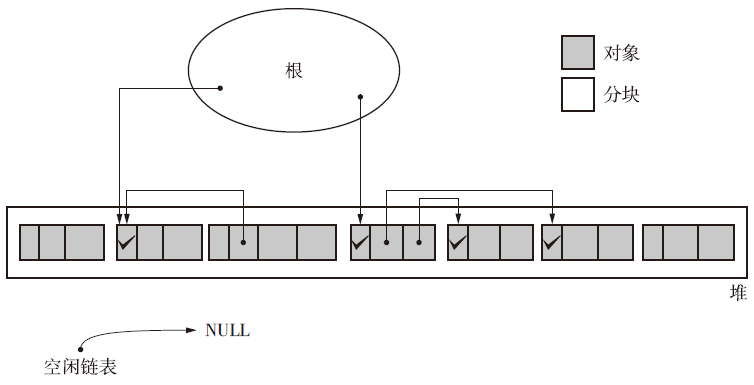
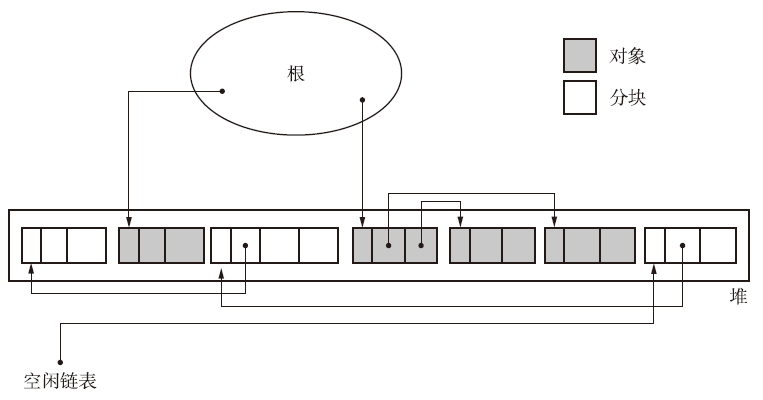
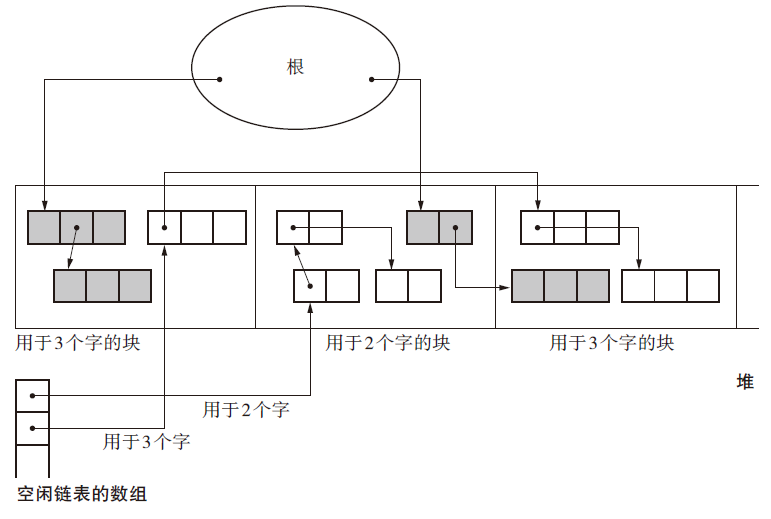

本文简介UE的核心对象模型与内存管理机制、Gameplay框架和Tick机制、渲染系统，以及网络系统等

UE对象模型：UObject
参考：
https://zhuanlan.zhihu.com/p/15846253240
https://dev.epicgames.com/documentation/zh-cn/unreal-engine/reflection-system-in-unreal-engine
https://zhuanlan.zhihu.com/p/565572047
基本功能
UObject是UE对象模型中最重要的类，其包含以下功能：
- 反射功能。反射功能可以查询一个对象的类名；查找一个类中定义的属性和方法；动态调用函数，以实现蓝图扩展以及编辑器扩展。
- 垃圾回收。UE通过垃圾回收机制来管理内存。所有继承自
UObject的对象都可以被垃圾回收系统跟踪与管理。垃圾回收通过引用计数和标记与清除来实现。 - 类和对象的管理。所有继承自
UObject的类由UE对象管理系统所处理，同时可以通过唯一路径访问所有继承自UObject的对象名称，比如/Game/Blueprints/MyObject - 动态加载和序列化。动态加载就是可以通过一个字符串路径，将保存的文件匹配正确的C++类，并加载对象实例。序列化就是将内存中的对象状态保存到磁盘或进行网络运输。
其继承关系如下：

使用方法
所有的继承自UObject的对象都需要标记UCLASS，如下所示
|
|
每个 UCLASS 都保留一个称作 类默认对象（Class Default Object） 的对象，简称CDO。CDO 本质上是一个默认"模板"对象，由类构建函数生成，之后就不再修改。只有经过UPROPERTY或者UFUNCTION 标记的属性或者成员才可以加入UCLASS.
MYPROJECT_API是虚幻引擎的构建工具（Unreal Build Tool, UBT）根据模块名称自动生成的宏，它用于将 UMyObject 类公开到其他模块。
可以通过IsValid()方法检查其是否被标记为应该删除
UObject的使用限制
- 由于支持反射、垃圾回收等功能，UObject比普通C++类更重；
- 不能使用new创建新对象，而是要用UE中的
NewObject或ConstructObject； - 大部分
UObject相关操作只能在主线程上进行。原因主要是为了性能，对于UObject不进行加锁，多线程操作会使得其进入数据竞态。 - 只能指针不支持
UObject
UObject的创建和生命周期
UObject 的创建和销毁由引擎管理，常用的创建方法包括：
NewObject: 创建一个普通的UObject实例。DuplicateObject: 复制一个已有的对象。StaticLoadObject: 从硬盘加载一个对象。
包括AActor, UComponent, UDataAsset, UUserWidget在内，大量UE对象继承自UObject
Actor
AActor是一个继承自UObject的重要类，在实现了UObject的基础之上还实现了以下特性：
- 网络同步（Replication）
- 创建与销毁
- 帧更新（Tick）
- 组件操作
- Actor嵌套操作
- 变换（Transform）
所有放置在游戏场景中的类都需要继承自AActor
从源码中可以看出，Actor本身不具有Attach功能，但是其拥有一个一对一的USceneComponent，由该部件实现嵌套操作

UActorComponent继承自UObject和接口IInterface_AssetUserData
其作为所有组件的基类，可以通过添加到Actor上，赋予Actor各种功能和特质，也可以说，Actor是各种组件的容器

generated.h
在进行编译的时候，UE会生成一个头文件，以及对应的cpp文件，距离来说，对于下面的Actor类：
|
|
可能会生成下面的MyActor.generated.h和MyActor.gen.cpp
|
|
|
|
其他基础Gameplay部件简介
Level, World
ULevel是UE的关卡，用于存储一系列的Actor
UWorld是ULevel的容器，代表一个真正的场景，每个UWorld实例必须包含一个主关卡（Persistent Level），还可能包含若干个流式关卡（Streaming Level，可选可按需动态加载和卸载）。
除了关卡，UWorld还保存着Scene、GameInstance、AISystem、FXSystem、NavigationSystem、PhysicScene、TimerManager等等信息
UWorld的类型包括：
|
|
可以看到，编辑器和编辑器内游戏都是一种UWorld的类型。
Engine
FWorldContext是引擎层面处理Level的设备上下文，方便UEngine管理和记录World关联的信息。用于内部类，不应该被逻辑层直接操作。它存储的数据有World类型、ContextHandle、GameInstance、GameViewport等等信息。
UEngine控制和掌管着很多内部系统及资源，下派生出UGameEngine和UEditorEngine。它是一个单例的全局变量
|
|
它是在程序启动之初在FEngineLoop::PreInitPostStartupScreen被创建并赋值的，其会根据宏WITH_EDITOR来选择创建创建编辑器引擎实例或者是游戏引擎实例
UE容器简介
以下分别介绍UE中的常见容器以及底层结构：
数组
UE中的数组容器是 TArray, 它和std::vector类似，
支持一些特殊操作，比如AddUnique等，当只有不存在相等的元素的时候才将元素加入数组，同时，支持快排Sort, 堆排序HeapSort以及稳定排序（归并排序）StableSort
其内部通过连续内存保存元素，可以通过相关操作访问原始内存，比如FString* StrPtr = StrArr.GetData();
除此之外，还支持通过首先分配空间，再拷贝内存数据的方式初始化或者扩充数组
|
|
除了表面的不同，TArray的默认元素增长策略和std::vector也有不同，std::vector一般是将分配元素空间翻倍，而TArray每次增长一个值后，下一次增长长度增加16。可以使用GetSlack检查数组的全部留存空间，使用Empty(n)可以在清空数组后指定预留空间，使用Reset(n)可以在不删除元素的条件下修改预留空间等
可以使用Heapify将数组组成堆的形式，使用HeapTop检查堆顶部元素，HeapPop删除堆顶元素等
散列容器
UE中，散列容器有TSet, TMap,以及TMultiMap等
对于TMap:
TPair<KeyType, ElementType>是其元素KeyType必须实现GetTypeHash函数以及operator==TMap可以使用KeySort或ValueSort函数进行排序，但是调整Map后可能会使得排序失效TMap底层使用稀疏数组实现- 和
TArray一样，可以通过在使用Empty()和Reset()的时候通过指定大于0的参数预留空间
对于TSet:
-
其内部元素必须相同
-
可以通过
Sort对元素排序，但是调整后可能会使得排序失效 -
和Map和Array一样，可以预留空间
-
KeyType必须实现GetTypeHash非成员函数以及实现了operator== -
TSet使用散列，即如果给出了KeyFuncs模板参数，该参数会告知集合如何从某个元素确定键，如何比较两个键是否相等，如何对键进行散列，以及是否允许重复键。 -
它们默认只返回对键的引用，使用
operator==对比相等性，使用非成员函数GetTypeHash进行散列。 -
默认情况下，集合中不允许有重复的键。 如果你的键类型支持这些函数，则可以将其用作集合键，无需提供自定义
KeyFuncs。 要写入自定义KeyFuncs，可扩展DefaultKeyFuncs结构体。
UE内存管理系统
作为游戏引擎，UE的内存管理系统需要实现以下几点：
- 封装系统平台之间的差异，提供统一接口。
- 按某种规则高效地创建、回收内存，可有效提升内存操作效率。
- 支持多种内存分配方案，各取所需。
- 支持多种调用方式，应对不同的场景。
- 支持多线程安全的内存操作。
- 部分支持TLS（线程局部缓存）。
- 支持GPU内存的统一管理。
- 提供内存调试、统计信息。
- 良好的扩展性。
基础数据结构
FFreeMem
可分配的小块内存信息记录体，在FMallocBinned定义如下：
|
|
以上的内存块不是额外记录的信息，而是直接保存在待分配的内存块当中，其中
FFreeMem* Next指向下一个内存块的地址，由pool进行管理；
uint32 NumFreeBlocks指的是从当前块开始有多少连续空闲的内存块。
FPoolInfo
为了减少分配内存的开销，以及避免多次陷入内核态，游戏引擎通常会首先申请一块较大的内存，再切割成若干小块
|
|
上面的代码中，uint16 Taken 代表引用计数，记录当前 Pool 中被使用的内存块数量。当数值归零，说明整页内存空闲，可返还给操作系统。
uint16 TableIndex 代表规格索引，对应全局尺寸表中的下标。它决定了当前 Pool 被切分成多大的“格子”（例如 32 字节或 64 字节），标识了该内存池的规格类型。
uint32 AllocSize 代表物理内存大小，记录了该 Pool 向操作系统实际申请的总字节数。这个数值通常是系统页大小的整数倍，用于统计内存用量。
FFreeMem* FirstMem 代表空闲链表的入口指针，指向当前 Pool 中第一个可用的空闲块。分配内存时从此直接获取，如果为空则表示当前 Pool 已满。
FPoolInfo* Next 代表链表的后继指针，指向下一个同规格的内存池。它将多个内存页串联起来，以便在当前页用完时，能够顺着链表找到下一个可用的 Pool。
FPoolInfo** PrevLink 代表快速移除句柄（二级指针），保存了“指向当前节点的那个指针”的地址。它允许程序在不遍历链表的情况下，以 O(1) 的复杂度将当前 Pool 从链表中安全摘除。
由于内存池内的内存块（Block）是等尺寸的，所以内存池的内存分布示意图如下：

FPoolTable
内存池表，采用双向链表存储了一组内存池。当内存池表中的内存池无法没有可分配的内存块时，就会重新创建一个内存池，加入双向链表中。
FPoolTable在FMallocBinned定义如下：
|
|

PoolHashBucket
内存池哈希桶，用于存放由内存地址哈希出来的键对应的所有内存池。PoolHashBucket在FMallocBinned定义如下：
|
|

PoolHashBucket的设计目的是为了保证当用户释放内存的时候，系统可以快速找到对应的内存池Info进行内存管理处理
FMalloc
**FMalloc**是UE内存分配器的核心类，掌控着UE所有的内存分配和释放操作。然而它是个虚基类，它继承自FUseSystemMallocForNew和FExec，同时也有多个子类，分别对应不同的内存分配方案和策略。

-
FUseSystemMallocForNew
FUseSystemMallocForNew提供了new和delete关键字的操作符支持，而FMalloc继承了FUseSystemMallocForNew，意味着FMalloc的所有子类都支持C++的new和delete等关键字的内存操作。
-
FMallocAnsi
标准分配器，直接调用C的malloc和free操作，未做任何的内存缓存和分配策略管理。
-
FMallocBinned
标准(旧有)的装箱管理方式，启用了内存池表（FPoolTable）、页面内存池表（FPagePoolTable）和内存池哈希桶（PoolHashBucket），是UE默认的内存分配方式，也是支持所有平台的一种内存分配方式。
1 2 3 4 5 6 7 8 9 10 11 12 13 14 15 16 17 18 19 20 21 22 23 24 25 26// Engine\Source\Runtime\Core\Public\HAL\MallocBinned.h class FMallocBinned : public FMalloc { private: // Counts. enum { POOL_COUNT = 41 }; /** Maximum allocation for the pooled allocator */ enum { EXTENDED_PAGE_POOL_ALLOCATION_COUNT = 2 }; enum { MAX_POOLED_ALLOCATION_SIZE = 32768+1 }; (......) // Variables. FPoolTable PoolTable[POOL_COUNT]; // 所有的内存池表列表 FPoolTable OsTable; // 没有实际使用 FPoolTable PagePoolTable[EXTENDED_PAGE_POOL_ALLOCATION_COUNT]; // 内存页(非小块内存)的内存池表. FPoolTable* MemSizeToPoolTable[MAX_POOLED_ALLOCATION_SIZE+EXTENDED_PAGE_POOL_ALLOCATION_COUNT]; // 根据尺寸索引的内存池表, 实际会指向PoolTable和PagePoolTable. PoolHashBucket* HashBuckets; // 内存池哈希桶 PoolHashBucket* HashBucketFreeList; // 可分配的内存池哈希桶 uint32 PageSize; // 内存页大小 (......) };查看其构造函数：
1 2 3 4 5 6 7 8 9 10 11 12 13 14 15 16 17 18 19 20 21 22 23 24 25 26 27 28 29 30 31 32 33 34 35 36 37 38 39 40 41 42 43 44 45 46 47 48 49FMallocBinned::FMallocBinned(uint32 InPageSize, uint64 AddressLimit) : TableAddressLimit(AddressLimit) , HashBuckets(nullptr) , HashBucketFreeList(nullptr) , PageSize (InPageSize) { // ... BinnedSizeLimit = Private::PAGE_SIZE_LIMIT/2; // ... /** The following options are not valid for page sizes less than 64k. They are here to reduce waste*/ PagePoolTable[0].FirstPool = nullptr; PagePoolTable[0].ExhaustedPool = nullptr; PagePoolTable[0].BlockSize = PageSize == Private::PAGE_SIZE_LIMIT ? BinnedSizeLimit+(BinnedSizeLimit/2) : 0; PagePoolTable[1].FirstPool = nullptr; PagePoolTable[1].ExhaustedPool = nullptr; PagePoolTable[1].BlockSize = PageSize == Private::PAGE_SIZE_LIMIT ? PageSize+BinnedSizeLimit : 0; // Block sizes are based around getting the maximum amount of allocations per pool, with as little alignment waste as possible. // Block sizes should be close to even divisors of the POOL_SIZE, and well distributed. They must be 16-byte aligned as well. static const uint32 BlockSizes[POOL_COUNT] = { 16, 32, 48, 64, 80, 96, 112, 128, 160, 192, 224, 256, 288, 320, 384, 448, 512, 576, 640, 704, 768, 896, 1024, 1168, 1360, 1632, 2048, 2336, 2720, 3264, 4096, 4672, 5456, 6544, 8192, 9360, 10912, 13104, 16384, 21840, 32768 }; for( uint32 i = 0; i < POOL_COUNT; i++ ) { PoolTable[i].FirstPool = nullptr; PoolTable[i].ExhaustedPool = nullptr; PoolTable[i].BlockSize = BlockSizes[i]; } for( uint32 i=0; i<MAX_POOLED_ALLOCATION_SIZE; i++ ) { uint32 Index = 0; while( PoolTable[Index].BlockSize < i ) { ++Index; } MemSizeToPoolTable[i] = &PoolTable[Index]; } MemSizeToPoolTable[BinnedSizeLimit] = &PagePoolTable[0]; MemSizeToPoolTable[BinnedSizeLimit+1] = &PagePoolTable[1]; }以上函数执行了以下步骤：
BinnedSizeLimit = Private::PAGE_SIZE_LIMIT/2;定义“小块内存”和“大页内存”的分界线；- 初始化内存页的内存池，比如对于内存池1, 默认情况下, 它的BlockSize为12k(IOS)或48k(非IOS平台)
- 定义标准的块大小表 (
BlockSizes)，从最小16到最大32768，其大小既可以满足16位对齐，又是内存页大小的因子 - 初始化标准内存池表 (
PoolTable)，对于每个size，定义一个标准的“管理对象” (FPoolTable) - “用空间换时间”：构建一个从最小
0到最大MAX_POOLED_ALLOCATION_SIZE的内存-内存池表的查找表 - 映射扩展池：将查找表末尾的特定位置指向那两个特殊的扩展页池 (
PagePoolTable)。这通常用于处理刚好达到边界值的特殊情况。

-
FMallocBinned2
现代UE默认的内存分配方式，相较现有
FMallocBinned优化了线程缓存它使用每线程缓存（Thread Local Cache / FreeList）。当一个线程释放内存时，它会优先放回该线程的本地缓存中，下次该线程申请同样大小的内存时可以直接拿来用，完全无锁（Lock-Free），极大地提高了多线程下的性能。
除此以外，常见的内存分配器还包括FMallocBinned3,FMallocTBB, FMallocMimalloc等
内存使用方式
用户在UE5中使用内存有以下几种调用方式：
-
GMalloc1 2 3 4 5 6 7 8 9 10// \Engine\Source\Runtime\Core\Private\Misc\CoreGlobals.cpp /*----------------------------------------------------------------------------- Global variables. -----------------------------------------------------------------------------*/ CORE_API FFeedbackContext* GWarn = nullptr; /* User interaction and non critical warnings */ FConfigCacheIni* GConfig = nullptr; /* Configuration database cache */ ITransaction* GUndo = nullptr; /* Transaction tracker, non-NULL when a transaction is in progress */ FOutputDeviceConsole* GLogConsole = nullptr; /* Console log hook */ CORE_API FMalloc* GMalloc = nullptr; /* Memory allocator */ CORE_API FMalloc** GFixedMallocLocationPtr = nullptr; /* Memory allocator pointer location when PLATFORM_USES_FIXED_GMalloc_CLASS is true */可以看到GMalloc实际上就是FMalloc的指针，并且在初始化的源代码中可以看到就，
-
FMemoryFMemory是UE的静态工具类，它提供了很多静态方法，用于操作内存，常见的api如下：1 2 3 4 5 6 7 8 9 10 11 12 13 14 15 16 17 18 19 20 21 22 23 24 25 26 27 28 29 30 31 32 33 34 35 36 37 38 39 40 41 42// 辅助类 static FORCEINLINE void* Memmove( void* Dest, const void* Src, SIZE_T Count ) { return FPlatformMemory::Memmove( Dest, Src, Count ); } static FORCEINLINE int32 Memcmp( const void* Buf1, const void* Buf2, SIZE_T Count ) { return FPlatformMemory::Memcmp( Buf1, Buf2, Count ); } static FORCEINLINE void* Memset(void* Dest, uint8 Char, SIZE_T Count) { return FPlatformMemory::Memset( Dest, Char, Count ); } // GMalloc分配 // // C style memory allocation stubs. // UE_ALLOCATION_FUNCTION(1, 2) static CORE_API void* Malloc(SIZE_T Count, uint32 Alignment = DEFAULT_ALIGNMENT); UE_ALLOCATION_FUNCTION(2, 3) static CORE_API void* Realloc(void* Original, SIZE_T Count, uint32 Alignment = DEFAULT_ALIGNMENT); static CORE_API void Free(void* Original); static CORE_API SIZE_T GetAllocSize(void* Original); // 调用C的内存分配释放接口 // // C style memory allocation stubs that fall back to C runtime // UE_ALLOCATION_FUNCTION(1) static FORCEINLINE void* SystemMalloc(SIZE_T Size) { void* Ptr = ::malloc(Size); MemoryTrace_Alloc(uint64(Ptr), Size, 0, EMemoryTraceRootHeap::SystemMemory); return Ptr; } static FORCEINLINE void SystemFree(void* Ptr) { MemoryTrace_Free(uint64(Ptr), EMemoryTraceRootHeap::SystemMemory); ::free(Ptr); } -
new/delete除了部分类重载了new和delete操作符之外，其它全局的new和delete通过宏的修改，被切换成
FMemory的内存分配方式. -
特定API
除了以上三种内存操作方式，UE还提供了各类创建、销毁特定内存的接口，它们通常是成对出现，例如：
1 2 3 4 5struct FPooledVirtualMemoryAllocator { void* Allocate(SIZE_T Size, uint32 AllocationHint = 0, FCriticalSection* Mutex = nullptr); void Free(void* Ptr, SIZE_T Size, FCriticalSection* Mutex = nullptr, bool ThreadIsTimeCritical = false); };从调用者的角度，多数情况下使用
new/delete操作符和FMemory方式操作内存，直接申请系统内存的情况并不多见。
UE垃圾回收系统
Unreal使用标记-清扫回收器来管理UObject的内存，其中，在每一帧计算哪些对象的内存可以被回收的时候，可能会产生游戏卡顿。这个过程叫做**“可达性分析(reachability analysis)”**， UE依赖垃圾回收的这个阶段在单帧内完成，这会暂时停止所有UObject处理（特别是Gameplay）。 可达性分析要扫描的对象越多，暂停时间就越长，结果可能会产生明显的Gameplay卡顿。
为了解决该问题，程序员可以使用：
- 将UObject的数量进行严格控制
- 使用UObject池
- 在正常Gameplay期间禁止垃圾回收
- 启用增量可达性分析，但是这是线程不安全的
标记-清理算法（Mark-Sweep）
标记-清理算法分为两个步骤：
- 第一阶段是标记（Mark）阶段，过程是遍历根的活动对象列表，将所有活动对象指向的堆对象标记为
TRUE。

-
第二阶段是清理（Sweep）阶段，过程是遍历堆列表，将所有标记为
FALSE的对象释放到可分配堆，且重置活动对象的标记，以便下次执行标记行为。
BiBOP (Big Bag Of Pages)
全称是Big Bag Of Pages，它的做法是将大小相近的对象整理成固定大小的块进行管理，跟UE的FMallocBinned分配器的策略如出一辙。

内存屏障
编写代码时，内存屏障（Memory Barrier，又称内存栅栏 Memory Fence）主要用于多线程并发编程中，以确保内存操作的顺序性。在现代计算机体系结构中，为了提高性能，编译器和处理器（CPU）都会对指令进行重排序（Reordering）。这种重排序在单线程环境下是安全的，但在多线程环境下，如果一个线程的写入顺序被另一个线程以错误的顺序观测到，就会导致严重的数据竞争和逻辑错误。因此，当编写无锁（Lock-free）算法、底层的线程同步原语，或者在通过共享内存进行跨线程通信而没有使用互斥锁（Mutex）时，就需要显式或隐式地使用内存屏障。
一般可以将内存屏障分为4种：
- LoadLoad屏障可以防止重新排序（reorder）导致的在屏障前后的读取操作的乱序问题
- StoreStore 可以防止重排序导致的在屏障前后的写入操作的乱序问题
- LoadStore 可以防止屏障前的加载操作和屏障后存储操作的重排序
- StoreLoad 可以防止屏障前的写入操作和屏障后加载操作的重排序。在大多数CPU架构中，它是个万能屏障，兼具其它三种内存屏障的功能，但开销也是最大的。
由于不同操作系统采用了不同的指令定义内存屏障，UE封装了这些内存屏障，只需要使用FPlatformMisc::MemoryBarrier()即可启用内存屏障。
此外，UE还引入了TAtomic<T>来隐式地添加屏障，这种方式比手动插入屏障更精确且性能更好，使用例子如下：
|
|
UE智能指针
UE的智能指针和C++11的智能指针相似，包含：
-
共享指针
TSharedPtr：每个共享指针都拥有其指向的对象，在所有指向某个对象的共享指针被销毁之前，指向的对象不会被销毁。常用场景：UE Editor中的Asset信息
TSharedPtr<FAssetData> -
共享引用
TSharedRef：类似于共享指针，但是区别在于共享指针可以指向nullptr，但是共享引用不可为空。、共享引用可以转成共享指针。
MakeShareable可以同时将对象指针转成TSharedPtr或者TSharedRef.同时，使用共享指针的
ToSharedRef也可以将指针转成引用，但是如果此时指针无效，就会报错
例如，如果将一个共享指针的初始化操作放到了ToSharedRef之后，就会报错
常用场景：Slate/UI Widget中的各类组件
-
弱指针
TWeakPtr：弱指针类似于共享指针，但是不拥有其指向的对象，不影响对象的生命周期，因此可以解决循环引用的问题，在使用的时候，一般会首先通过Pin将其转为共享指针，再检查该指针是否有效 -
唯一指针
TUniquePtr：唯一指针仅会显式拥有其引用的对象。仅有一个唯一指针指向给定资源，因此唯一指针可转移所有权，但无法共享。
需要注意的是，上面的指针只能指向不是派生自UObject的对象，也就是不是以U或者A为开头的对象。要使用指针指向继承自UObject的对象，就必须使用ObjectPtr：
例如，TWeakObjectPtr<class UEditorActorSubsystem> WeakEditorActorSubsystem;就可以在非UObject类中使用，从而利用UEditorActorSubsystem的功能